06_OpenDRIVE Junctions - road networks for simulation_原文
2026年05月15日 14:25
Welcome to my video about junctions in open drives. My name is Nico and in this video I will explain how the common junctions work in opendrive and we will cover the basics and I will show you a simple example of where I'm explaining everything. So in this video, you will learn what is needed to define a simple cross junction in open drive. So let us start from the top and we will work our way down.
This is the high level XML structure of open drives. Check out my video about what is open drives, where I'm explaining what each element in the structure is for, link in the video description. So the junction is defined directly after our row definitions, and it contains all the connections we need to form a junction. But before we dive deeper into a junction, let let's see what types of junction open drive let's you define. There are three types of junctions available in open drive, common junctions, direct and virtual junctions. You can model everything with common junctions in certain use cases, direct junctions or virtual junctions will make your life easier in terms of modeling or in your simulation. And this is why in this video, I will only talk about common junctions. For now, we will create additional videos for direct junctions and virtual junctions.
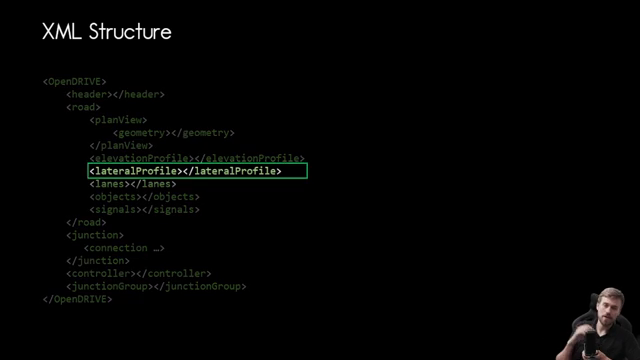
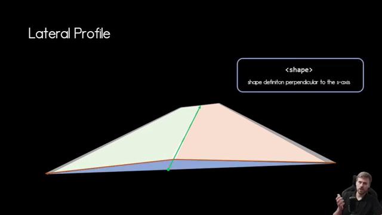
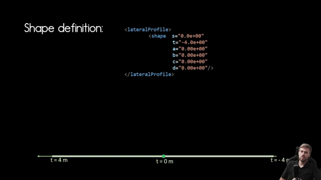
In the future, we will have a look at a simple cross junction and build our common junctions for this cross junction. This cross junction will serve as our example so I can explain how to build common junctions in open drive. This is a very simple junction. Of course, there are no traffic lights in this junction, but we have sidewalks and we have right hand traffic If you're looking for a more complex example, you can download the opendrive package where you will find a bunch of examples, including across junction with traffic lights. I will put the link in the video description. So let's start with the XML overview of this cross junction, and then we will start it dive deeper into how that junction works and how you can model it.
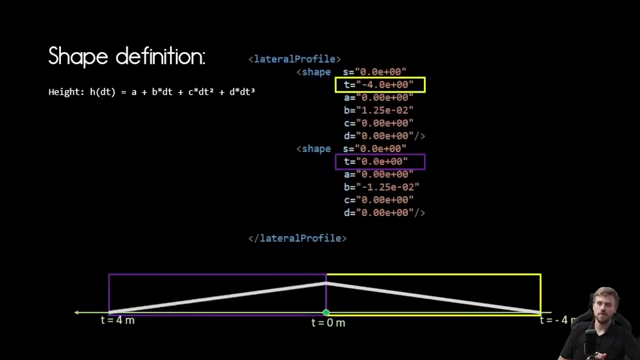
Here's the XML overview of our roads and the junction. So for the junction, we need not only the junction itself, but also all the road definitions. They are marked green here. And we need the connections within the junction and the mark yellow. So one step at a time, we will first inspect the road definitions and then we will have a look into the junction and the connection elements.
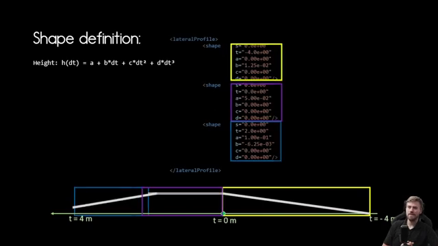
All the roads we need are defined as road elements. And in this example, we need 16 roads for our simple cross junction. And we can see in that example that some of those roads are part of a junction and some are not. And this is stated by the junction attribute. And if it is set to one or -1 under our row definition, we now start with the junction definition.
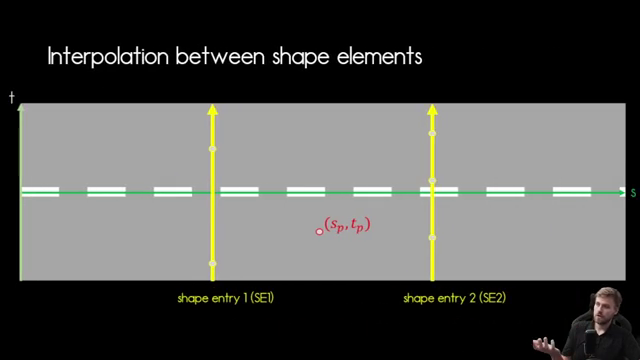
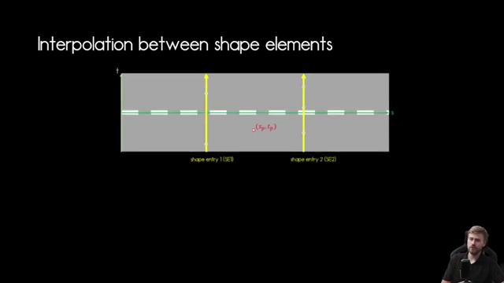
As we saw in the high level XML overview. And within the junction element, we find all our connection elements. And the connection elements use the beforehand defined roads to form all the connections within the junction. And for our example, we need 12 connections. So let's see why in our example, we have four incoming roads in our junctions, and from every incoming road, we have three choices to either go left, right, or straight. And if we multiply that to all the incoming roads, this makes 12 connections within that junction and four incoming roads. And this adds up to our 16 roads we defined at the very beginning.
And here they are again, our 12 connections, and each connection has an ID for identification, a designated incoming road identifying the road coming into the junction, one of the 4 we saw before, and connecting road. This contains the idea of the road within the junction, that is a connecting road and the contact point that indicates if the incoming road connects to the connecting road at its end or at its beginning. And in our example today, all incoming roads connect to the beginning of each connecting road.
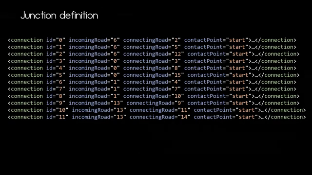
Let us identify the incoming roads according to the connections. And here we have the ID 6, 0, 1, and 30. And you can see that all four roads are coming into the junction.
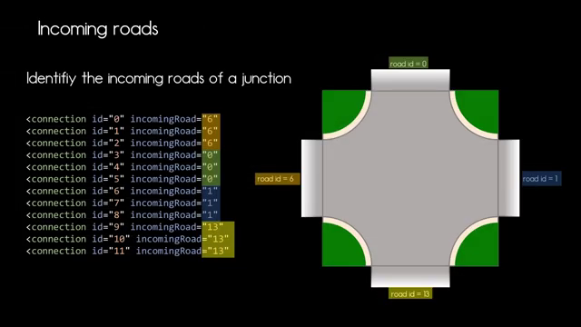
Next, we need to figure out how the connections within the junctions are running from the connection element itself. We know what connecting road is linked to which incoming road. What we do not know where it leads to. And for this, we have to look into the row definition itself. This row definition is outside the junction, as we learned before, and here we can check out the link element, and this contains the information we are looking for the predecessor and successor of our connecting road. In our case, we will start with a connecting rod of ID 2, and that has as predecessor the incoming road with ID 6 and the successor with the road of ID 1. And here we see that connection, and in the same manner, we can establish all the other connections within our junction.
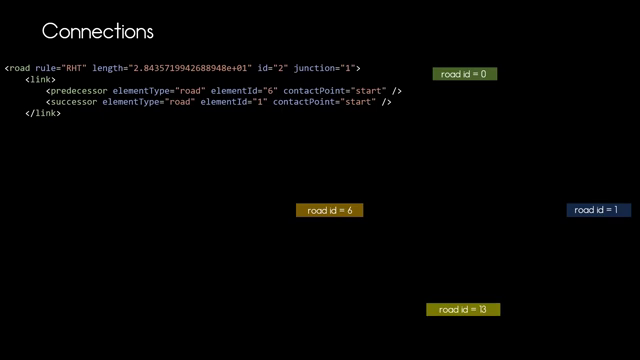
Now all the connections are established. But what we see here does not look like the junction we are looking for. So let's have a deeper look into the definition of our connecting roads to see how can we form the junction as we would like to have it. And again, we will use the road with ID 2 as an example. And we see that this road is made out of several geometry elements making up our basic road check from a bird's view. And in this case, this is the reference line including x and y coordinates. And you can check out my video about the opendrive line to learn more about all the individual elements used in this example to make up this reference line of our connecting road with ID 2.
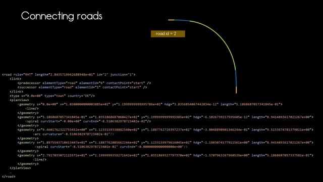
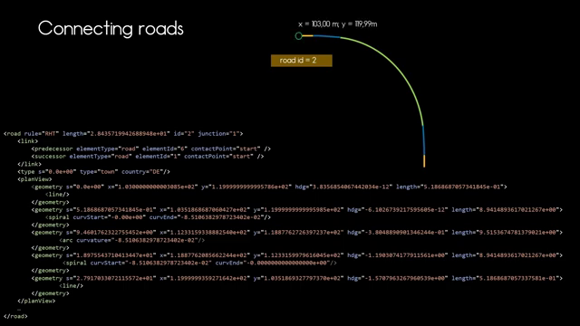
So as we now have this reference line, we can now start to attach lanes to it. So let's do that. These are the lanes we want to attach first, the driving lane. Check out my video about lanes to learn more about how lanes work in open drives.
Next, we add our border lane and we add our sidewalk to it. And now we have the attributes. We mentioned in the very beginning that our junction will have a sidewalk next to the junction itself. And here we have it, this is how it works. So in our junction, we have four roads, like our road with ID 2, and these are the roads 3, 9, 10, and they are all positioned around the junction to form our junctions and add the sidewalk to the outside of the junction. Now let's put those roads into the junction itself. And here we can see it where each of those roads lead to and where they're coming from.
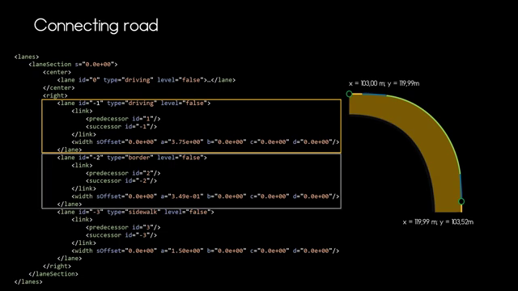
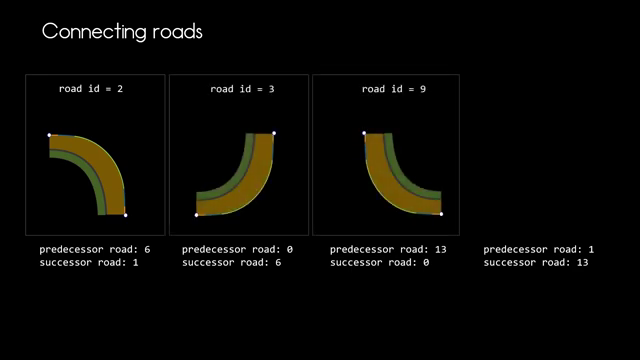
At this point, we now know how to define our junction and there are some something we need to be aware of, and that is that the connecting roads may overlap within the junction. And we can see in this example how those roads overlap at the starting point. And this is completely fine, but needs to be considered when modeling.
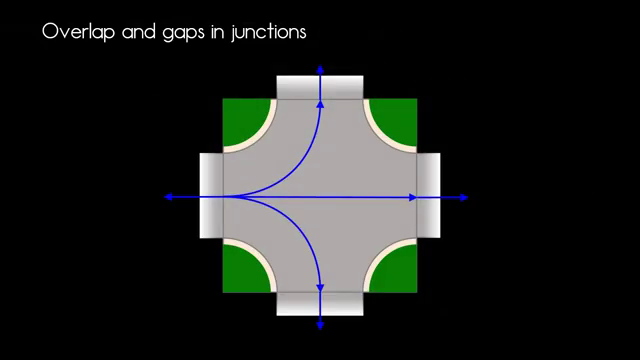
Now let's add the roads from the second incoming road to the junction. And now we have a lot more overlap, but we also still have gaps in our junction. And then our example, the remaining connecting roads will cover this area, but it can happen in other junctions that you model that the connecting roads will not cover the entire junction area. And you need to be aware that this can occur. And this is how all the connecting roads look like when they overlap. It's quite busy in our junction, even though it's a quite simple cross junction. So thank you very much for watching.
Now you have a basic idea about how junctions in opendrive work. There are a few more topics. For example, the other junction types that you can discover, and you can dive deeper into the documentation, or of course, you can wait for future videos to explain those concepts. If you like this video, consider to like and subscribe and see.